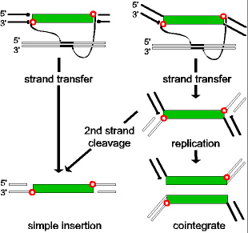

 |
Simple insertions and cointegrate formation.
Strand transfer and replication leading to simple insertions and cointegrates. The IS DNA is shown as a shaded cylinder. Liberated transposon 3' OH groups are shown as small shaded circles and those of the donor backbone (bold lines) as filled circles. 5' phosphates are indicated by a bar. Strand polarity is indicated. Target DNA is shown as unfilled boxes. The left hand column shows an example of an IS which undergoes double strand cleavage prior to strand transfer. The right hand column presents an element which undergoes single strand cleavage at its ends. After strand transfer this can evolve into a cointegrate molecule by replication or a simple insertion by second strand cleavage. |